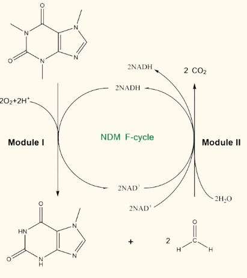

The selection of the synthetic products
We chose 7-methylxanthine (7-MX), a potential myopic relief compound without reported side effects on humans, as the synthetic product. In previous clinical trials, this compound was mainly used in adolescents with significant progression of myopia. However, the chemical synthesis of 7-MX is difficult and expensive. Future iGEM teams may also focus on other common diseases in special populations, and look for drugs with low or even no toxicity to humans for biosynthesis.
The selection of raw material
In this project, our selected substrate can be obtained from coffee waste grounds, which significantly reduces the raw material costs and achieves decaffeination of coffee grounds. This selection is highly conducive in terms of the secondary utilization of coffee grounds, and can also protect the environment by reducing or eliminating the toxicity of caffeine when released into the environment. Future iGEM teams can also adopt this strategy to reduce raw material costs and simultaneously protect the environment effectively.
Part design
We constructed a high-copy plasmid with caffeine degradation genes and transformed it into the chassis strain E. coli (BW25113). Next, we identified specific methyl groups on caffeine molecule and demethylated them to convert caffeine to 7-MX by several steps. The optimized Ndm enzyme system was used for efficient caffeine demethylation, and the expression levels of related enzymes were adjusted by multiple promoter structures. The future iGEM team can also synthesize single or multiple products by step-wise synthesis and change the position or order of the structural genes to allow the appropriate or optimal expression of key proteins, which may lead to efficient synthesis of the designated products.
Dual Module Interaction Mode (NDM F-cycle)
In our experiments, we found that formaldehyde produced during the caffeine-to-7-MX conversion not only pollutes the environment, but also damages host cells’ metabolism, leading to premature termination of the reaction and low efficiency, which is one of the main factors limiting the efficient process of the reaction. Therefore, we designed an additional module, named the cofactor regeneration system. By interoperating the two modules to form a harmonious closed loop, the desirable compounds were efficiently produced, and green production was achieved simultaneously, which will provide ideas for other iGEM teams when they encounter this type of bottlenecks in their synthetic pathways.
